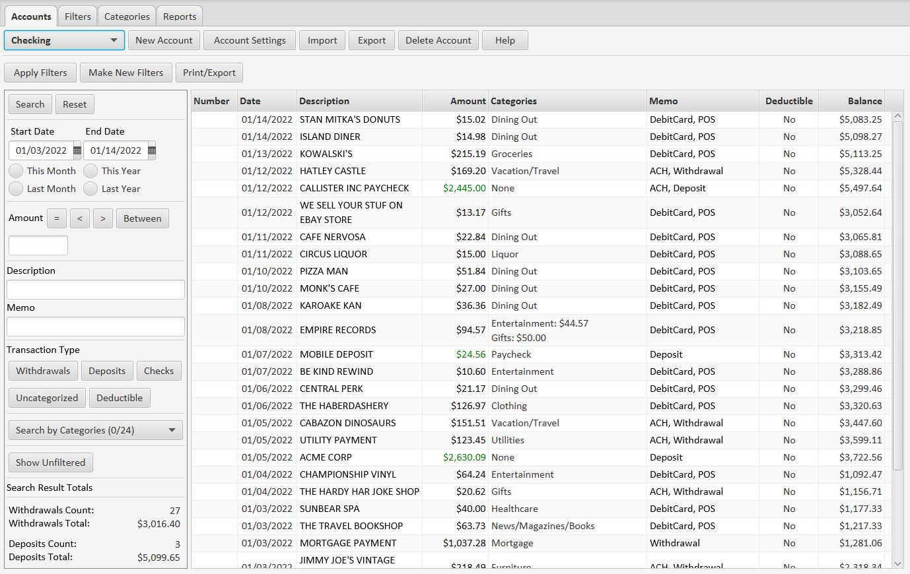

Accounts Tab
The account panel looks like this:

Search Panel
On the left is the search panel. The controls there allow you to search your transactions in various ways. Most are self-explanatory with the exception of the Checks, Uncategorized, and Deductible buttons. Clicking these buttons once tells the search to include only that type of transaction. For example, clicking the Checks button means the search will be limited to only checks. Clicking the button a second time turns the button text red, indicating that the search will exclude that type of transaction. Clicking the Checks button twice means checks will be excluded from the search. Clicking the button a third time returns it to an unselected state.
The Show Unfiltered button allows you to see your transaction descriptions and memos exactly as they were downloaded, before they were altered by any filters.
The bottom of the search panel shows the totals for your search results.
Transaction Table
On the right side is the transaction table. By default transactions are sorted in descending order on date, with the most current transactions first. You can sort the table on any column by clicking on the column header. Clicking once sorts the table in ascending order on that column. Clicking again sorts the table in descending order on that column. You can sort on multiple columns by holding down the shift key as you click on additional columns.
If you want to manually assign a category to a transaction you can click on the category for that transaction in the table. You will see the screen below.

As you can see, you can assign one or more categories to a transaction.
New Accounts Button
Use the New Account button to add a new account to the application. The new account settings panel looks like this:

The account name and account type are required. The filter set and balance values are optional. If you know the initial balance you can set it here before you load any transactions into the app. Or you can wait until you load some transactions, and then use the Account Settings panel to set the current balance.
Account Settings Button
Use the Account Settings button to make changes to the account. The account settings panel looks like this:

You can change the account name and the filter set at any time. You can also specify either the initial balance or the current balance. If you specify the initial balance, the application will calculate transaction balances from the earliest transaction forward in time. If you specify the current balance, the application will calculate transaction balances from the most recent transaction backward in time. Use the Apply button to apply the balance you specify.
Account Filters Button
Use the Apply Filters button to apply all the filters in the account's filter set to all the transactions in the account.
Make New Filters Button
Use the Make New Filters button after you have loaded new transactions into the account. It brings up the New Filter Options panel, which looks like this:

If you choose the New Transactions Only option, you can define new filters on only the unfiltered transactions in the newest set of transactions loaded into the account. You can use the date control to choose all transactions loaded after a specific date. If you use the All Transactions option, you will can define filters on all unfiltered transactions in the account. In addition, you can restrict your definitions to just deposits or withdrawals.
If you choose the Descriptions option, you can define new filters based on the transaction descriptions. The Memos option allows you to define new filters on the transaction memos. The default choice for these options can be set in the Filter Set settings of the filter set you have assigned to the account.
Clicking OK brings you to the Make New Filters panel, which looks like this:

This panel lists all the distinct values of the description or memo field you can use to define new filters. To create a new filter, click on the plus icon, which brings you to the Create New Filter panel:

The default settings for this panel are specified in the Filter Set settings of the filter set you have assigned to the account. Often it will be the case that you want to search for a keyword in the search field which. You can highlight that key word in the Search Value box and right-click on the box, which will bring up the right-click menu like this:

When you select Trim, the Search Value will be trimmed to the keyword you selected. If you select Trim and Copy, the value will be trimmed and copied to the Replacement Value box, like this:

Many bank transactions have extraneous text in the description or memo. In this way you can trim your search value to just the keyword you want, and set the replacment value to exclude all that extra text.
Finally, you can select a category from the Category drop-down, and optionally set this filter to flag transactions as deductible. Clicking Save takes you back to the Create New Filters panel.
When you are finished creating new filters, click the Close button and the new filters will be applied to all the transactions in the account.
Created with the Personal Edition of HelpNDoc: Free Kindle producer